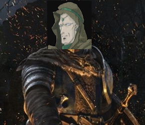

Nice! We knew Ayra, but couldn’t figure out which 2nd gen you were since there were like 3 with similar abilities
The scumteam was me, Apprentice, Chloe, and PKR.
Also gold was skewed heavily in scum favor imo as they got a kill and got all the gold to buy basically whatever they needed
oh yeah also who was alice
I have a wholeass spreadsheet of flavor solving
Most of it was wrong
But we were right on the single person who mattered
Eevee

My factional kill was great
My class wasnt shitty
Ily
Lewyn. I can post all classes if ya want
1 Like
I said exactly what alice was lol
Yeah PKR was able to buy Paragon (2x gold skill) night 1 which was whacky
Something I wanted to point out that I found interesting at the time was Kyodaz reacted to Marshal Reaction Test. I was watching that intently, because I felt like the way Kyodaz handled how he did that would pretty clearly tell his alignment, which it did. If you read his posts, it was pretty clear that he was pushing Marshal too hard there, when if he was a town he would have probably had several doubts about his push “Why would Marshal lie about this, maybe he’s reaction testing”
Agreed pkr has like 10k by end game
1 Like
So many people trusted me after suspecting me and you’re our VIP TBE. We would’ve lost if you hadn’t hammered Derps. How about inviting everyone to our scum discord server now?
i should’ve shot kyo on d2
saved everyone else a headache
instead of just ignoring him
Also thanks scum team for carry. I needed it.
3/6
I guess I’m satisfied with my reads in specchat.

I think this has og art before me and Gyede at 4am made some meme art for second gen
All classcards
Class Cards
The Loptrian Empire will all be given a fake claim at the beginning of the game randomly
Brigid (Ulirs Bow)- Bow Ground Unit- turns into Febail (Duke of Jungby) Bow Ground Unit
Naoise (Red Hand of Sigurd) Sword Lance Cavelier- turns into Ares (Wielder of the Demon Blade) Sword Lance Cavelier
Alec (Green Hand of Sigurd) Sword Lance Cavelier- turns into Carrion (Patriot of Leonster) Sword Lance Cavelier
Azelle (Young Flame) Fire Anima Magic Ground Unit- turns into Linoan (Duchess of Tahra) Light Fire Anima Magic Ground Unit
Chulainn (Od’s Gladiator) Sword Ground Unit- turns into Mareeta (Princess of Rivough) Sword Ground Unit
Claud (Staff of Bragi) Stave Ground Unit- turns into Tina (Cleric of Tahra) Stave Ground Unit
Sigurd
Prince of the Duchy of Chalphy, Sword and Lance Cavelier, Alliance of the Twelve Crusaders
Weapons (Passive): Swords and Lances. He starts equipped with a Sword. Type /weapon Sword or /weapon lance to swap to your other weapon. Weapons affect your ita chances, follow the weapon chart listed in op for more information
Lovers at First Sight (Passive): You are Masons with Deidre. You know each other’s class cards and share a chat, but as you are in love, you will both die together. Resulting in the end times for the Alliance of the Twelve Crusaders, but will also bring on a second-generation to continue the battle.
Pursuit (Passive): Perform a second ITA on an opponent if ur speed stat is higher than ur targets
Main Character (Night): You know your team better than anyone else. Check if target player is a member of the Alliance of the Twelve Crusaders. (3 uses, Odd nights only)
Speed: 25
Gold: 1,200Turns into Seliph in the Second Generation
Defeat the Loptrian Empire and any Neutrals that seek you harm

In the Second Generation
Seliph
Prince of Light, Sword and Lance Cavelier, Alliance of the Twelve Crusaders
Weapons (Passive): Swords and Lances. He starts equipped with a Sword. Type /weapon Sword or /weapon lance to swap to your other weapon. Weapons affect your ita chances, follow the weapon chart listed in op for more information
Sibling Bond (Passive): You are Masons with Julia. You know each other’s class cards and share a chat, but as you are in siblings, you will no longer die together. If one of you ITAs a player, the second one will get a 10% increased chance of landing an ITA on same said player.
Pursuit (Passive): Perform a second ITA on an opponent if ur speed stat is higher than ur targets
Nihil (Passive): Enemies cant use any skills when attacking you. Also, they are always at normal effectiveness or below
Main Character (Night): You know your team better than anyone else. Check if target player is a member of the Alliance of the Twelve Crusaders. (3 uses)
Speed: 25
Gold: What your father had leftDefeat the Loptrian Empire and any Neutrals that seek you harm

Deirdre
Lady of the Forest, Light Magic User, Alliance of the Twelve Crusaders
Weapons (Passive): Light Magic. She starts equipped with a Light Magic Tome. Type /weapon Light Magic Tome to swap to your other weapon. Weapons affect your ita chances, follow the weapon chart listed in op for more information
Lovers at First Sight (Passive): You are Masons with Sigurd. You know each other’s class cards and share a chat, but as you are in love, you will both die together. Resulting in the end times for the Alliance of the Twelve Crusaders, but will also bring on a second-generation to continue the battle. Miracle and Renewal will not kill either of you if procced, and they cant proc for a death from Sigurd.
Nihil (Passive): Enemies cant use any skills when attacking you. Also, they are always at normal effectiveness or below
Miracle (Passive): You will survive the first ITA that hits you (one time use, will NOT carry over into the second generation).
Renewal (Passive): Saves you from death at night (One time use)
Lights Blessing (Day): Raise someone’s ITA avoidance by 10% today (1 use)
Speed: 12
Gold: 700Turns into Julia in the Second Generation
Defeat the Loptrian Empire and any Neutrals that seek you harm

In the Second Generation
Julia
Naga’s Blood, Light Magic User, Alliance of the Twelve Crusaders
Weapons (Passive): Light Magic. She starts equipped with a Light Magic Tome. Type /weapon Light Magic Tome to swap to your other weapon. Weapons affect your ita chances, follow the weapon chart listed in op for more information
Sibling Bond (Passive): You are Masons with Seliph. You know each other’s class cards and share a chat, but as you are in siblings, you will no longer die together. If one of you ITAs a player, the second one will get a 10% increased chance of landing an ITA on same said player.
Pursuit (Passive): Gain a second ITA on an opponent if ur speed stat is higher than ur targets
Nihil (Passive): Enemies cant use any skills when attacking you. Also, they are always at normal effectiveness or below
Adept (Passive): Gain an ITA shot after you shoot your ITA, no matter if you hit or not. Speed% chance to activate.
Naga’s Light (Night): Burn an opponent down in Naga’s Light killing them guiltlessly (1 use)
Speed: 12
Gold: What your mother had leftDefeat the Loptrian Empire and any Neutrals that seek you harm

Quan
Luminous Lancer, Lance Cavelier, Alliance of the Twelve Crusaders
Weapons (Passive): Lance. He starts equipped with a Lance. Type /weapon lance to swap to your other weapon. Weapons affect your ita chances, follow the weapon chart listed in op for more information
Adept (Passive): Gain an ITA shot after you shoot your ITA, no matter if you hit or not. Speed% chance to activate.
Leonester Jail (Night): abduct a player, which will prevent that person from being able to succesfully perform any night actions in addition to rendering the player unable to die (2 uses)
Speed: 18
Gold: 1,400Turns into Leif in the Second Generation
Defeat the Loptrian Empire and any Neutrals that seek you harm

In the Second Generation
Leif
Prince of Leonester, Sword, Bow, and Lance Cavelier, Alliance of the Twelve Crusaders
Weapons (Passive): Swords, Bows, and Lances. He starts equipped with a Sword. Type /weapon Sword or /weapon lance or /weapon bow to swap to your other weapon. Weapons affect your ita chances, follow the weapon chart listed in op for more information
Adept (Passive): Gain an ITA shot after you shoot your ITA, no matter if you hit or not. Speed% chance to activate.
Leonester Jail (Night): abduct a player, which will prevent that person from being able to succesfully perform any night actions in addition to rendering the player unable to die (4 uses)
Light Brand (Day): Your ITA will count as Lightning Anima Magic for today (1 use)
Speed: 23
Gold: What your father had leftDefeat the Loptrian Empire and any Neutrals that seek you harm

Ethlyn
Spirited Princess, Sword and Stave Cavelier, Alliance of the Twelve Crusaders
Weapons (Passive): Sword and Stave. She starts equipped with a Sword. Type /weapon sword or /swap stave to swap to your other weapon. Weapons affect your ita chances, follow the weapon chart listed in op for more information
Critical (Passive): Raises Crit chance by 10% and if it hits within 91-100 then it ignores all other skills
Heal (Night): Heal target player (infinite uses)
Speed: 14
Gold: 1,400Turns into Altena in the Second Generation
Defeat the Loptrian Empire and any Neutrals that seek you harm

In the Second Generation
Altena
Luminous Rider, Sword, Lance, and Stave Flyer, Alliance of the Twelve Crusaders
Weapons (Passive): Swords, Bows, and Lances. He starts equipped with a Sword. Type /weapon Sword or /weapon lance or /weapon bow to swap to your other weapon. Weapons affect your ita chances, follow the weapon chart listed in op for more information
Adept (Passive): Gain an ITA shot after you shoot your ITA, no matter if you hit or not. Speed% chance to activate.
Critical (Passive): Raises Crit chance by 10% and if it hits within 91-100 then it ignores all other skills
Heal (Night): Heal target player (infinite uses)
Dragon Breath (Day): Shoot Fire in front of target player ITAs against them will fail (1 use)
Speed: 19
Gold: What your Mother had leftDefeat the Loptrian Empire and any Neutrals that seek you harm

Finn
Vassal of Leonster, Lance Cavelier, Alliance of the Twelve Crusaders
Weapons (Passive): Lances. He starts equipped with a Lance. Type /weapon lance to swap to your other weapon. Weapons affect your ita chances, follow the weapon chart listed in op for more information
Pursuit (Passive): Perform a second ITA on an opponent if ur speed stat is higher than ur targets
Miracle (Passive): You will survive the first ITA that hits you (one time use, would carry over if not used to the second generation, but would not get refunded).
Quans Right Hand Man (Night): Redirect Target Player to yourself (infinite uses)
Speed: 17
Gold: 1000Turns into Punished Finn in the Second Generation
Defeat the Loptrian Empire and any Neutrals that seek you harm

In the Second Generation
Punished Finn
Knightly Defender, Lance Cavelier, Alliance of the Twelve Crusaders
Weapons (Passive): Lances. He starts equipped with a Lance. Type /weapon lance to swap to your other weapon. Weapons affect your ita chances, follow the weapon chart listed in op for more information
Pursuit (Passive): Perform a second ITA on an opponent if ur speed stat is higher than ur targets
Miracle (Passive): You will survive the first ITA that hits you (one time use, will not be refunded if it was already used in the first generation).
Leif’s Right Hand Man (Night): Redirect Target Player to yourself (infinite uses)
Speed: 16
Gold: Whatever you had left from the first generationTurns into Punished Finn in the Second Generation
Defeat the Loptrian Empire and any Neutrals that seek you harm

Lachesis
Lady of House Nordion, Sword Stave Ground Unit, Alliance of the Twelve Crusaders
Weapons (Passive): Swords and Staves. She starts equipped with a Sword. Type /weapon sword or /weapon stave to swap to your other weapon. Weapons affect your ita chances, follow the weapon chart listed in op for more information
Charm (passive): Raise a unit and your own ITA chance to hit and avoid by 5%.
Rescue Stave (Night): target two players and switch them, causing any actions directed at one to be used on the other instead.
Speed: 9
Gold: 1600Turns into Nanna in the Second Generation
Defeat the Loptrian Empire and any Neutrals that seek you harm

In the Second Generation
Nanna
Nordion Princess, Sword Stave Cavelier, Alliance of the Twelve Crusaders
Weapons (Passive): Swords and Staves. She starts equipped with a Sword. Type /weapon sword or /weapon stave to swap to your other weapon. Weapons affect your ita chances, follow the weapon chart listed in op for more information
Charm (passive): Raise a unit and your own ITA chance to hit and avoid by 5%. Must be decided by N1
Vantage (passive): If targeted with an ITA, fire back at the same time as the shooter, causing both, none, or one of you to die.
Rescue Stave (Night): target two players and switch them, causing any actions directed at one to be used on the other instead.
Speed: 14
Gold: Whatever your Mother Left youDefeat the Loptrian Empire and any Neutrals that seek you harm

Ayra
Descendant of Od, Sword Ground Unit, Alliance of the Twelve Crusaders
Weapons (Passive): Sword. She starts equipped with a Sword. Type /weapon sword to swap to your other weapon. Weapons affect your ita chances, follow the weapon chart listed in op for more information
Pursuit (Passive): Gain a second ITA on an opponent if ur speed stat is higher than ur targets
Nihil (Passive): Enemies cant use any skills when attacking you. Also, they are always at normal effectiveness or below
Astra (passive): 5% chance to get four more ITAs during the day after firing your first
Swordsman to the End (passive): If you are ever killed, the following night all kills that aren’t strongmanned will be prevented as your last-ditch effort to fight for your life. This passive goes away if you are ever role blocked.
Speed: 12
Gold: 600Turns into Larcei in the Second Generation
Defeat the Loptrian Empire and any Neutrals that seek you harm

In the Second Generation
Larcei
Royal Myrmidon, Sword Ground Unit, Alliance of the Twelve Crusaders
Weapons (Passive): Sword. She starts equipped with a Sword. Type /weapon sword to swap to your other weapon. Weapons affect your ita chances, follow the weapon chart listed in op for more information
Pursuit (Passive): Gain a second ITA on an opponent if ur speed stat is higher than ur targets
Nihil (Passive): Enemies cant use any skills when attacking you. Also, they are always at normal effectiveness or below
Astra (passive): 5% chance to get four more ITAs during the day after firing your first
Vantage (passive): If targeted with an ITA, fire back at the same time as the shooter, causing both, none, or one of you to die.
Swordsman to the End (passive): If you are ever killed, the following night all kills that arent strongmanned will be prevented as your last-ditch effort to fight for your life. This passive goes away if you are ever role blocked.
Speed: 12
Gold: Whatever your mother left youDefeat the Loptrian Empire and any Neutrals that seek you harm

Tailtiu
Thunderous Noble, Lightning Anima Magic Ground Unit, Alliance of the Twelve Crusaders
Weapons (Passive): Lightning Anima Magic. She starts equipped with a Lightning Anima Tome. Type /weapon lightning to swap to your other weapon. Weapons affect your ita chances, follow the weapon chart listed in op for more information
Wrath (Passive): If targeted by an ITA today and Survive, add 10% chance to land an ITA on another today. If your shot hit within 100-(number of shots against you)*10% then it ignores all other skills
Cast Spell (Day): Imbue your ITA with a spell type of your choosing instead of whatever weapon you have equipped.
Generate Spell (Night) Visit someone leaving a page of your spellbook behind notifying them that someone visited them. Gain a random type of spell from the following pool: Wind, Fire, Dark, Light
Speed: 10
Gold: 1700Turns into Tine in the Second Generation
Defeat the Loptrian Empire and any Neutrals that seek you harm

In the Second Generation
Tine
Wrath of Thunder, Lightning Anima Magic and Sword Ground Unit, Alliance of the Twelve Crusaders
Weapons (Passive): Lightning Anima Magic and Sword. She starts equipped with a Lightning Anima Tome. Type /weapon lightning or /weapon sword to swap to your other weapon. Weapons affect your ita chances, follow the weapon chart listed in op for more information
Wrath (Passive): If targeted by an ITA today and Survive, add 10% chance to land an ITA on another today. If your shot hit within 100-(number of shots against you)*10% then it ignores all other skills
Vantage (passive): If targeted with an ITA, fire back at the same time as the shooter, causing both, none, or one of you to die.
Cast Spell (Day): Imbue your ITA with a spell type of your choosing instead of whatever weapon you have equipped.
Generate Spell (Night) Visit someone leaving a page of your spellbook behind notifying them that someone visited them. Gain a random type of spell from the following pool: Wind, Fire, Dark, Light
Speed: 10
Gold: Whatever your Mother left youDefeat the Loptrian Empire and any Neutrals that seek you harm

Lewyn
Guiding Breeze, Wind Magic Ground Unit, Alliance of the Twelve Crusaders
Weapons (Passive): Wind Anima Magic. He starts equipped with a Wind Anima Tome. Type /weapon wind to swap to your other weapon. Weapons affect your ita chances, follow the weapon chart listed in op for more information
Adept (Passive): Gain an ITA shot after you shoot your ITA, no matter if you hit or not. Speed% chance to activate.
Critical: (Passive): Raises Crit chance by 10% and if it hits within 91-100 then it ignores all other skills
Sety (Passive): each night be given a new piece of information relating to the game’s mechanics/setup.
Speed: 9
Gold: 1300Turns into The-total-not-incarnation-of-Sety formerly known as Lewyn in the Second Generation
Defeat the Loptrian Empire and any Neutrals that seek you harm

In the Second Generation
The-total-not-incarnation-of-Sety formerly known as Lewyn
Sety, Anima Magic Ground Unit, Alliance of the Twelve Crusaders
Weapons (Passive): Wind, Fire, and Lightning Anima Magic and Sword. He starts equipped with a Wind Anima Tome. Type /weapon wind or /weapon lightning or /weapon fire to swap to your other weapon. Weapons affect your ita chances, follow the weapon chart listed in op for more information
Adept (Passive): Gain an ITA shot after you shoot your ITA, no matter if you hit or not. Speed% chance to activate.
Critical: (Passive): Raises Crit chance by 10% and if it hits within 91-100 then it ignores all other skills
Sety (Passive): each night be given a new piece of information relating to the game’s mechanics/setup.
Speed: 13
Gold: Whatever you left yourselfDefeat the Loptrian Empire and any Neutrals that seek you harm

Lex
Nobleman of Dozel, Axe Cavelier, Alliance of the Twelve Crusaders
Weapons (Passive): Axe. He starts equipped with a Axe. Type /weapon axe to swap to your other weapon. Weapons affect your ita chances, follow the weapon chart listed in op for more information
Vantage (passive): If targeted with an ITA, fire back at the same time as the shooter, causing both, none, or one of you to die.
Paragon (passive): All Monetary gains are doubled
Axe of Slank (Night): kill any player that has posted less than 40*Number of Days posts (2 uses)
Speed: 18
Gold: 500Turns into Iuchar in the Second Generation
Defeat the Loptrian Empire and any Neutrals that seek you harm

In the Second Generation
Iuchar
Commander of Isaach Castle, Axe Armored Cavelier, Alliance of the Twelve Crusaders
Weapons (Passive): Axe. He starts equipped with a Axe. Type /weapon axe to swap to your other weapon. Weapons affect your ita chances, follow the weapon chart listed in op for more information
Vantage (passive): If targeted with an ITA, fire back at the same time as the shooter, causing both, none, or one of you to die.
Paragon (passive): All Monetary gains are doubled
Pavise (Passive): When shot, Speed% chance to not die by any hit that lands
Axe of Slank (Night): kill any player that has posted less than 40*Number of Days posts (4 uses)
Speed: 19
Gold: Whatever your Uncle left youDefeat the Loptrian Empire and any Neutrals that seek you harm

Midir
Jungby Bow Knight, Bow Cavelier, Alliance of the Twelve Crusaders
Weapons (Passive): Bow. He starts equipped with a Bow. Type /weapon bow to swap to your other weapon. Weapons affect your ita chances, follow the weapon chart listed in op for more information
Pursuit (Passive): Gain a second ITA on an opponent if ur speed stat is higher than ur targets
Charge (passive): Gives you and your ita target another ita use. They cannot target you with their ITA until you fire your own. (Your speed - their speed %)
Love Letter (Night): Can send an anonymous 1000 character message to another player through the host at night (infinite uses)
Speed: 22
Gold: 800Turns into Lester in the Second Generation
Defeat the Loptrian Empire and any Neutrals that seek you harm

In the Second Generation
Lester
Uller’s Blood, Bow Cavelier, Alliance of the Twelve Crusaders
Weapons (Passive): Bow. He starts equipped with a Bow. Type /weapon bow to swap to your other weapon. Weapons affect your ita chances, follow the weapon chart listed in op for more information
Pursuit (Passive): Gain a second ITA on an opponent if ur speed stat is higher than ur targets
Charge (passive): Gives you and your ita target another ita use. They cannot target you with their ITA until you fire your own. (Your speed - their speed %)
Vantage (passive): If targeted with an ITA, fire back at the same time as the shooter, causing both, none, or one of you to die.
Love Letter (Night): Can send an anonymous 1000 character message to another player through the host at night (infinite uses)
Speed: 23
Gold: 800Defeat the Loptrian Empire and any Neutrals that seek you harm

Dew
Young Thief, Sword Ground Unit, Alliance of the Twelve Crusaders
Weapons (Passive): Sword. He starts equipped with a Sword. Type /weapon sword to swap to your other weapon. Weapons affect your ita chances, follow the weapon chart listed in op for more information
Steal (Passive): On a missed ITA shot, take half of their gold on a (Speed%). They will be notified they lost gold at the start of the night
Bargain (passive): All Prices are halved for you at the store and the arena
Rig the Fight(Day): Pick a player if they enter the arena tonight. Take their entrance fee, they will think they lost in the first round.
Speed: 18
Gold: 0Turns into Patty in the Second Generation
Defeat the Loptrian Empire and any Neutrals that seek you harm

In the Second Generation
Patty
Phantom Thief, Sword Ground Unit, Alliance of the Twelve Crusaders
Weapons (Passive): Sword. She starts equipped with a Sqord. Type /weapon sword to swap to your other weapon. Weapons affect your ita chances, follow the weapon chart listed in op for more information
Steal (Passive): On a missed ITA shot, take half of their gold on a (Speed%). They will be notified they lost gold at the start of the night
Bargain (passive): All Prices are halved for you at the store and the arena
Rig the Fight(Day): Pick a player if they enter the arena tonight. Take their entrance fee, they will think they lost in the first round.
Speed: 20
Gold: Whatever your Father left youDefeat the Loptrian Empire and any Neutrals that seek you harm

Arden
Strong and Tough, Armored Sword Ground Unit, Alliance of the Twelve Crusaders
Weapons (Passive): Sword. He starts equipped with a sword. Type /weapon sword to swap to your other weapon. Weapons affect your ita chances, follow the weapon chart listed in op for more information
Vantage (passive): If targeted with an ITA, fire back at the same time as the shooter, causing both, none, or one of you to die.
Pavise (Passive): When shot, Speed% chance to not die by any hit that lands
Watch From the Back (Night): Watch a player seeing who they visit. (Odd nights only)
Speed: 5
Gold: 1200Turns into Hanibal in the Second Generation
Defeat the Loptrian Empire and any Neutrals that seek you harm

In the Second Generation
Hanibal
The Wall, Armored Sword Lance Axe Bow Ground Unit, Alliance of the Twelve Crusaders
Weapons (Passive): Sword, Lance, Axe, Bow. She starts equipped with a sword. Type /weapon sword or /weapon lance or /weapon axe or /weapon bow to swap to your other weapon. Weapons affect your ita chances, follow the weapon chart listed in op for more information
Vantage (passive): If targeted with an ITA, fire back at the same time as the shooter, causing both, none, or one of you to die.
Adept (Passive): Gain an ITA shot after you shoot your ITA, no matter if you hit or not. Speed% chance to activate.
Pavise (Passive): When shot, Speed% chance to not die by any hit that lands
Watch From the Back (Night): Watch a player seeing who visits them. (Odd nights only)
Speed: 10
Gold: Whatever your fellow Armored pal left yaDefeat the Loptrian Empire and any Neutrals that seek you harm

Jamke
Prince of Verdane, Bow Ground Unit, Alliance of the Twelve Crusaders
Weapons (Passive): Bow. He starts equipped with a Bow. Type /weapon bow to swap to your other weapon. Weapons affect your ita chances, follow the weapon chart listed in op for more information
Pursuit (Passive): Gain a second ITA on an opponent if ur speed stat is higher than ur targets
Charge (passive): Gives you and your ita target another ita use. They cannot target you with their ITA until you fire your own. (Your speed - their speed %)
Adept (Passive): Gain an ITA shot after you shoot your ITA, no matter if you hit or not. Speed% chance to activate.
Hunting Eye (Night): Track a player seeing who they visit tonight (Even Nights only)
Speed: 17
Gold: 600Turns into Tanye in the Second Generation
Defeat the Loptrian Empire and any Neutrals that seek you harm

In the Second Generation
Tanya
Dagdar’s Kid, Bow Ground Unit, Alliance of the Twelve Crusaders
Weapons (Passive): Bow. She starts equipped with a Bow. Type /weapon bow to swap to your other weapon. Weapons affect your ita chances, follow the weapon chart listed in op for more information
Pursuit (Passive): Gain a second ITA on an opponent if ur speed stat is higher than ur targets
Charge (passive): Gives you and your ita target another ita use. They cannot target you with their ITA until you fire your own. (Your speed - their speed %)
Adept (Passive): Gain an ITA shot after you shoot your ITA, no matter if you hit or not. Speed% chance to activate.
Hunting Eye (Night): Track a player seeing who they visit tonight (Even Nights only)
Speed: 17
Gold: Whatever your fellow Archer left youDefeat the Loptrian Empire and any Neutrals that seek you harm

Erinys
Queen of Silesse, Sword Lance Flying Unit, Alliance of the Twelve Crusaders
Weapons (Passive): Swords and Lances. She starts equipped with a Lance. Type /weapon sword or /weapon sword to swap to your other weapon. Weapons affect your ita chances, follow the weapon chart listed in op for more information
Pursuit (Passive): Gain a second ITA on an opponent if ur speed stat is higher than ur targets
Pegasus Run (Night): take target player for a Pegasus ride, preventing them from doing actions at night.
Speed: 15
Gold: 600Turns into Fee in the Second Generation
Defeat the Loptrian Empire and any Neutrals that seek you harm

In the Second Generation
Fee
Daughter of Lewyn, Bow Ground Unit, Alliance of the Twelve Crusaders
Weapons (Passive): Swords and Lances. She starts equipped with a Lance. Type /weapon sword or /weapon sword to swap to your other weapon. Weapons affect your ita chances, follow the weapon chart listed in op for more information
Pursuit (Passive): Gain a second ITA on an opponent if ur speed stat is higher than ur targets
Vantage (passive): If targeted with an ITA, fire back at the same time as the shooter, causing both, none, or one of you to die.
Pegasus Run (Night): take target player for a Pegasus ride, preventing them from doing actions at night.
Speed: 18
Gold: Whatever your Mother left youDefeat the Loptrian Empire and any Neutrals that seek you harm

Dagdar
Leader of the Mount Violdrake Bandits, Axe Bow Ground Unit, Alliance of the Twelve Crusaders
Weapons (Passive): Axes and Bows. He starts equipped with a Axe. Type /weapon axe or /weapon bow to swap to your other weapon. Weapons affect your ita chances, follow the weapon chart listed in op for more information
Charge (passive): Gives you and your ita target another ita use. They cannot target you with their ITA until you fire your own. (Your speed - their speed %)
Hammer (Day): All Itas from you today will be effective against armored units (3 uses)
Wanted Bandit Thief (Night): Replace the picture of your wanted poster with someone else’s bountying them. If they are lynched and a Member of the Alliance of the Twelve Crusaders a second lynch is allowed, extending the day at most 12 hours if there’s less than 12 hours left (2 uses)
Speed: 9
Gold: 1000Turns into Dagdar 2 Electric Boogaloo in the Second Generation
Defeat the Loptrian Empire and any Neutrals that seek you harm

In the Second Generation
Dagdar 2 Electric Boogaloo
Dagdar but he’s Ripped, Bow Ground Unit, Alliance of the Twelve Crusaders
Weapons (Passive): Axes and Bows. He starts equipped with a Axe. Type /weapon axe or /weapon bow to swap to your other weapon. Weapons affect your ita chances, follow the weapon chart listed in op for more information
Charge (passive): Gives you and your ita target another ita use. They cannot target you with their ITA until you fire your own. (Your speed - their speed %)
Hammer (Night): All Itas from you tomorrow will be effective against armored units (4 uses)
Wanted Bandit Thief (Night): Replace the picture of your wanted poster with someone else’s bountying them. If they are lynched and a Member of the Alliance of the Twelve Crusaders a second lynch is allowed, extending the day at most 12 hours if there’s less than 12 hours left (3 uses)
Speed: 14
Gold: Whatever you had left yourselfDefeat the Loptrian Empire and any Neutrals that seek you harm

Silvia
Traveling Dancer, Sword Ground Unit, Alliance of the Twelve Crusaders
Weapons (Passive): Swords. She starts equipped with a Sword. Type /weapon swordto swap to your other weapon. Weapons affect your ita chances, follow the weapon chart listed in op for more information
Adept (Passive): Gain an ITA shot after you shoot your ITA, no matter if you hit or not. Speed% chance to activate.
Miracle (Passive): You will survive the first ITA that hits you (one time use, would carry over if not used to the second generation, but would not get refunded).
Dance (Day): Give another player another ITA shot (3 uses)
Speed: 6
Gold: 1600Turns into Lene in the Second Generation
Defeat the Loptrian Empire and any Neutrals that seek you harm

In the Second Generation
Lene
Yearning Dancer, Sword Ground Unit, Alliance of the Twelve Crusaders
Weapons (Passive): Swords. She starts equipped with a Sword. Type /weapon sword to swap to your other weapon. Weapons affect your ita chances, follow the weapon chart listed in op for more information
Adept (Passive): Gain an ITA shot after you shoot your ITA, no matter if you hit or not. Speed% chance to activate.
Miracle (Passive): You will survive the first ITA that hits you (one time use, will not be refunded if it was already used in the first generation).
Dance (Day): Give another player another ITA shot. (6 uses)
Vantage (passive): If targeted with an ITA, fire back at the same time as the shooter, causing both, none, or one of you to die.
Speed: 9
Gold: Whatever you had left yourselfDefeat the Loptrian Empire and any Neutrals that seek you harm

Beowolf
Easily Swayed, Sword Cavelier, Neutral
Weapons (Passive): Swords. He starts equipped with a Sword. Type /weapon swordto swap to your other weapon. Weapons affect your ita chances, follow the weapon chart listed in op for more information
Charge (passive): Gives you and your ita target another ita use. They cannot target you with their ITA until you fire your own. (Your speed - their speed %)
Pursuit (Passive): Gain a second ITA on an opponent if ur speed stat is higher than ur targets
Shrewd (Passive): You will survive the first ITA hit or nightkill connection made against you. This is an all-game one-shot that will not be refunded into the second generation but would carry over if not used here.
Hire Me Please (Passive): You see a war brewing, and dont care about the politics behind it. Just who can give you more cash to fight for them. Message players asking for them to hire you. If you receive 5,000 gold from either side you will join that squad. If you are hired to the Loptrian Empire you will join their chat, gain the ability to use Forgery and your factional kill will look as if the last person who had Forgery used on them committed the murder. If hired by the Alliance of the Twelve Crusaders gain the use of Hired Guard. If the second generation starts before you receive 5,000 gold from either side you will join the side who gave more. If a tie occurs you may choose.
Resume (Day/Night): Message a player with a 1000 character message. They will be then prompted to give money to the messenger.
Ability gained only after joining the Loptrian Empire (don't give to player until then):
Forgery (Night): Target player will look as the opposite alignment to checks tonight. Also changes who your factional makes appear to visit the murderer. (Gained after joining the Loptrian Empire)
Ability gained only after joining the Alliance of the Twelve Crusaders (don't give to player until then):
Hired Guard (Night): Target player will be guarded from attacks tonight and empowered. If any attacks come you will fall in their place. Giving all your gold to the player you defended instead of your killer (Gained after joining the Alliance of the Twelve Crusaders)
Speed: 19
Gold: 0Turns into Diarmund in the Second Generation
Pick a Side and win with them

In the Second Generation
Diarmuid
Hired Hand, Sword Cavelier, Neutral
Weapons (Passive): Swords. She starts equipped with a Sword. Type /weapon sword to swap to your other weapon. Weapons affect your ita chances, follow the weapon chart listed in op for more information
Shrewd (passive): You will survive the first ITA hit or nightkill connection made against you. This is an all-game one-shot vest that would not be refunded from the first generation if it was expended there, but you will still have it here if it wasn’t expended in Gen 1.
Charge (passive): Gives you and your ita target another ita use. They cannot target you with their ITA until you fire your own. (Your speed - their speed %)
Pursuit (Passive): Gain a second ITA on an opponent if ur speed stat is higher than ur targets
Charm (passive): Raise a unit and your own ITA chance to hit and avoid by 5%. Must be decided by the end of the night
Vantage (passive): If targeted with an ITA, fire back at the same time as the shooter, causing both, none, or one of you to die.
Hire Me Please (Passive): Your Father saw a war brewing, and picked a side. If you were hired to the Loptrian Empire you will join their chat, gain the ability to use Forgery and your factional kill will look as if the last person who had Forgery used on them committed the murder. If hired by the Alliance of the Twelve Crusaders gain the use of Hired Guard.
Resume (Day/Night): Message a player with a 1000 character message. They will be then prompted to give money to the messenger.
Ability gained only after joining the Loptrian Empire (don't give to player until then):
Forgery (Night): Target player will look as the opposite alignment to checks tonight. Also changes who your factional makes appear to visit the murderer. (Gained after joining the Loptrian Empire)
Ability gained only after joining the Alliance of the Twelve Crusaders (don't give to player until then):
Hired Guard (Night): Target player will be guarded from attacks tonight and empowered. If any attacks come you will fall in their place. Giving all your gold to the player you defended instead of your killer (Gained after joining the Alliance of the Twelve Crusaders)
Speed: 19
Gold: Whatever your Father had left yourselfPick a Side and win with them

Manfroy
Puppet Master, Dark Magic Ground Unit, Loptrian Empire
Weapons (Passive): Dark Magic. He starts equipped with a Dark Magic Tome. Type /weapon darkto swap to your other weapon. Weapons affect your ita chances, follow the weapon chart listed in op for more information
From the Shadows (passive): You dont work with your team directly but more from the shadows. If you use shadow control on one of them, you won’t roleblock them but join the mafia chat. If you perform the factional it roleblocks your target. If all other members of the Loptrian Empire are dead you gain the factional if not already in the main chat.
Loptrian Connections (Passive): You will always survive any attacks made against you from any members of the Loptrian empire, except ITA’s.
Adept (Passive): Gain an ITA shot after you shoot your ITA, no matter if you hit or not. Speed% chance to activate.
Pursuit (Passive): Gain a second ITA on an opponent if ur speed stat is higher than ur targets
Charm (passive): Raise a unit and your own ITA chance to hit and avoid by 5%. Must be decided by N1
Shadow Control (Night): Roleblock target player. If used on a member of the Loptrian Empire you will join their chat.
Speed: 7
Gold: 1000Turns into Julius in the Second Generation
Gain Parity with the Alliance of the Twelve Crusaders and defeat any Neutrals that seek you harm

In the Second Generation
Julius
Dark Seed, Dark and Fire Anima Magic Ground Unit, Loptrian Empire
Weapons (Passive): Dark Magic and Fire Anima Magic. She starts equipped with a Dark Magic Tome. Type /weapon dark or /weapon fire to swap to your other weapon. Weapons affect your ita chances, follow the weapon chart listed in op for more information
From the Shadows (passive): You dont work with your team directly but more from the shadows. If you use shadow control on one of them, you won’t roleblock them but join the mafia chat. If you perform the factional it roleblocks your target. If all other members of the Loptrian Empire are dead you gain the factional if not already in the main chat.
Loptrian Connections (Passive): You will always survive any attacks made against you from any members of the Loptrian empire, except ITA’s.
Pursuit (Passive): Gain a second ITA on an opponent if ur speed stat is higher than ur targets
Charge (passive): Gives you and your ita target another ita use. They cannot target you with their ITA until you fire your own. (Your speed - their speed %)
Wrath (Passive): If targeted by an ITA today and Survive, add 10% chance to land an ITA on another today. If your shot hit within 100-(number of shots against you)*10% then it ignores all other skills
Shadow Control (Night): Roleblock target player. If used on a member of the Loptrian Empire you will join their chat.
Speed: 12
Gold: Whatever Manfroy had left yourselfGain Parity with the Alliance of the Twelve Crusaders and defeat any Neutrals that seek you harm

Arvis
Fjaler’s Burning Rage, Anima Magic Ground Unit, Loptrian Empire
Weapons (Passive): Fire, Wind, and Thunder Anima Magic. She starts equipped with a Fire Anima Magic Tome. Type /weapon fire or /weapon wind or /weapon thunder to swap to your other weapon. Weapons affect your ita chances, follow the weapon chart listed in op for more information
Loptrian Empire (Passive): You are a member of the scumteam and will have your own mafia chat/discord to talk to your fellow members. If you perform the factional the target is singed to a crisp and the flip will not be shown.
Adept (Passive): Gain an ITA shot after you shoot your ITA, no matter if you hit or not. Speed% chance to activate.
Nihil (Passive): Enemies cant use any skills when attacking you. Also, they are always at normal effectiveness or below
Grand Execution (Day): Target player will be put up for execution anonymously stopping and resetting all other votes. This can only be used in the first 24 hours. Target player will make a defense and then can be voted execute or pardon. If executed you will gain another use but cant be used for two days. If pardoned gain 2000 gold. (1 use)
Meteor (Night): Kill target player strongmanned. Causing the Second Generation to begin if it kills. (1 use. Cant be used til Night 2)
Fire of Loptous (Night): Surround someone in Fire they will have a 0% ITA chance no matter what tomorrow
Speed: 18
Gold: 1000Turns into Emperor Arvis in the Second Generation
Gain Parity with the Alliance of the Twelve Crusaders and defeat any Neutrals that seek you harm

In the Second Generation
Emperor Arvis
Emperor of Flame, Anima and Weapon Master Magic Ground Unit, Loptrian Empire
Weapons (Passive): Sword, Lance, Axe, Bow, Fire, Wind, and Thunder Anima Magic. He starts equipped with a Fire Anima Magic Tome. Type /weapon fire or /weapon sword or /weapon lance or /weapon axe or /weapon fire or /weapon wind or /weapon thunderto swap to your other weapon. Weapons affect your ita chances, follow the weapon chart listed in op for more information
Loptrian Empire (Passive): You are a member of the scumteam and will have your own mafia chat/discord to talk to your fellow members. If you perform the factional the target is singed to a crisp and the flip will not be shown.
Pavise (Passive): When shot, Speed% chance to not die by any hit that lands
Charm (passive): Raise a unit and your own ITA chance to hit and avoid by 5%. Must be decided by the end of the cycle when you gain this ability.
Nihil (Passive): Enemies cant use any skills when attacking you. Also, they are always at normal effectiveness or below
Grand Execution (Day): Target player will be put up for execution anonymously stopping and resetting all other votes. This can only be used in the first 24 hours. Target player will make a defense and then can be voted execute or pardon. If executed you will gain another use but cant be used for two days. If pardoned gain 2000 gold. (1 use)
Fire of Loptous (Night): Surround someone in Fire they will have a 0% ITA chance no matter what tomorrow
Speed: 21
Gold: Whatever you had left yourselfGain Parity with the Alliance of the Twelve Crusaders and defeat any Neutrals that seek you harm

Raydrik
Baron in Black, Armored Swords Lances and Axe Ground Unit, Loptrian Empire
Weapons (Passive): Swords Axes and Lances. He starts equipped with a sword. Type /weapon sword or /weapon lance or /weapon axe to swap to your other weapon. Weapons affect your ita chances, follow the weapon chart listed in op for more information
Loptrian Empire (Passive): You are a member of the scumteam and will have your own mafia chat/discord to talk to your fellow members. If you perform the factional, your ITA rate will be increased by 15% tomorrow
Pavise (Passive): When shot, Speed% chance to not die by any hit that lands
Supplies of a Duke (Night): Heal a person, stopping all attacks on them during the night. The next day, if someone were to kill them during an ITA it will instead be blocked and say “Hit! No one died
Speed: 10
Gold: 1800Turns into Dead Lord Mus in the Second Generation
Gain Parity with the Alliance of the Twelve Crusaders and defeat any Neutrals that seek you harm

In the Second Generation
Dead Lord Mus
Leader of the Dead Lords, Armored Swords Lances and Axe Ground Unit, Loptrian Empire
Weapons (Passive): Swords Axes and Lances. He starts equipped with a sword. Type /weapon sword or /weapon lance or /weapon axe to swap to your other weapon. Weapons affect your ita chances, follow the weapon chart listed in op for more information
Loptrian Empire (Passive): You are a member of the scumteam and will have your own mafia chat/discord to talk to your fellow members. If you perform the factional, your ITA rate will be increased by 15% tomorrow
Pavise (Passive): When shot, Speed% chance to not die by any hit that lands
Wrath (Passive): If targeted by an ITA today and Survive, add 10% chance to land an ITA on another today. If your shot hit within 100-(number of shots against you)*10% then it ignores all other skills
Supplies of a Duke (Night): Heal a person, stopping all attacks on them during the night. The next day, if someone were to kill them during an ITA it will instead be blocked and say “Hit! No one died
Speed: 20
Gold: Whatever your former body owner had left yourselfGain Parity with the Alliance of the Twelve Crusaders and defeat any Neutrals that seek you harm

Reinhardt
Thunder’s Sword, Thunder Anima Magic and Sword Cavelier, Loptrian Empire
Weapons (Passive): Thunder Anima Magic and Swords. He starts equipped with a Thunder Anima Tome. Type /weapon sword or /weapon thunder to swap to your other weapon. Weapons affect your ita chances, follow the weapon chart listed in op for more information
Loptrian Empire (Passive): You are a member of the scumteam and will have your own mafia chat/discord to talk to your fellow members. If you perform the factional you will see any players who visited the target.
Vantage (passive): If targeted with an ITA, fire back at the same time as the shooter, causing both, none, or one of you to die.
Charge (passive): Gives you and your ita target another ita use. They cannot target you with their ITA until you fire your own. (Your speed - their speed %)
Thunder Brigade (Night): Learn of a players Flavor Name, their Alignment, and one of their abilities (3 uses)
Speed: 23
Gold: 1000Turns into Reinhardt Right Back at Ya in the Second Generation
Gain Parity with the Alliance of the Twelve Crusaders and defeat any Neutrals that seek you harm

In the Second Generation
Reinhardt Right Back at Ya
Thunder’s Rondo, Thunder Anima Magic and Sword Cavelier, Loptrian Empire
Weapons (Passive): Thunder Anima Magic and Swords. He starts equipped with a Thunder Anima Tome. Type /weapon sword or /weapon thunder to swap to your other weapon. Weapons affect your ita chances, follow the weapon chart listed in op for more information
Loptrian Empire (Passive): You are a member of the scumteam and will have your own mafia chat/discord to talk to your fellow members. If you perform the factional you will see any players who visited the target.
Vantage (passive): If targeted with an ITA, fire back at the same time as the shooter, causing both, none, or one of you to die.
Charge (passive): Gives you and your ita target another ita use. They cannot target you with their ITA until you fire your own. (Your speed - their speed %)
Adept (Passive): Gain an ITA shot after you shoot your ITA, no matter if you hit or not. Speed% chance to activate.
Pavise (Passive): When shot, Speed% chance to not die by any hit that lands
Thunder Brigade (Night): Learn of a players Flavor Name, their Alignment, and one of their abilities (3 uses)
Speed: 26
Gold: Whatever you had left yourselfGain Parity with the Alliance of the Twelve Crusaders and defeat any Neutrals that seek you harm

Veld
Dark Bishop, Dark Magic Ground Unit, Loptrian Empire
Weapons (Passive): Dark Magic and Wind Magic. She starts equipped with a Dark Magic Tome. Type /weapon dark or /weapon wind to swap to your other weapon. Weapons affect your ita chances, follow the weapon chart listed in op for more information
Loptrian Empire (Passive): You are a member of the scumteam and will have your own mafia chat/discord to talk to your fellow members. If you perform the factional your kill will be strongmanned
Knowledge of the Enemy (Night): Kill a player that has claimed their flavor name and at least one of their skills strongmanned (will be passed to a Loptrian Empire member of your choosing on death one time)
Adept (Passive): Gain an ITA shot after you shoot your ITA, no matter if you hit or not. Speed% chance to activate.
Renewal (Passive): Saves you from death at night (One time use)
Speed: 16
Gold: 1200Turns into Veld Remastered in the Second Generation
Gain Parity with the Alliance of the Twelve Crusaders and defeat any Neutrals that seek you harm

In the Second Generation
Veld Remastered

Dark Bishop 2 Scholar of the First Sin, Dark and Wind Anima Magic Ground Unit, Loptrian Empire
Weapons (Passive): Dark Magic and Wind Magic. She starts equipped with a Dark Magic Tome. Type /weapon dark or /weapon wind to swap to your other weapon. Weapons affect your ita chances, follow the weapon chart listed in op for more information
Loptrian Empire (Passive): You are a member of the scumteam and will have your own mafia chat/discord to talk to your fellow members. If you perform the factional your kill will be strongmanned
Knowledge of the Enemy (Night): Kill a player that has claimed their flavor name and at least one of their skills strongmanned (will be passed to a Loptrian Empire member of your choosing on death one time)
Adept (Passive): Gain an ITA shot after you shoot your ITA, no matter if you hit or not. Speed% chance to activate.
Renewal (Passive): Saves you from death at night (One time use)
Speed: 20
Gold: Whatever you had left yourselfGain Parity with the Alliance of the Twelve Crusaders and defeat any Neutrals that seek you harm
Ishtar
Thunder’s Waltz, Tunder Anima Magic Ground Unit, Loptrian Empire
Weapons (Passive): Thunder Magic. She starts equipped with a Thunder Anima Magic Tome. Type /weapon thunder to swap to your other weapon. Weapons affect your ita chances, follow the weapon chart listed in op for more information
Loptrian Empire (Passive): You are a member of the scumteam and will have your own mafia chat/discord to talk to your fellow members. If you perform the factional your kill will not be able to be seen/tracked.
Adept (Passive): Gain an ITA shot after you shoot your ITA, no matter if you hit or not. Speed% chance to activate.
Vantage (passive): If targeted with an ITA, fire back at the same time as the shooter, causing both, none, or one of you to die.
Fast as Lightning (Night): Swap two players. Anyone targeting player A will target player B and vice versa.
Zap (Day): Zap a player causing them to bleed. They will die in two nights (2 uses)
Speed: 13
Gold: 700Turns into Ishtar featuring Dante from the Devil May Cry in the Second Generation
Gain Parity with the Alliance of the Twelve Crusaders and defeat any Neutrals that seek you harm

In the Second Generation
Ishtar featuring Dante from the Devil May Cry tm Series
Thunder Goddess, Light and Thunder Anima Magic Ground Unit, Loptrian Empire
Weapons (Passive): Light Magic and Thunder Magic. She starts equipped with a Thunder Anima Magic Tome. Type /weapon light or /weapon thunder to swap to your other weapon. Weapons affect your ita chances, follow the weapon chart listed in op for more information
Loptrian Empire (Passive): You are a member of the scumteam and will have your own mafia chat/discord to talk to your fellow members. If you perform the factional your kill will not be able to be seen/tracked.
Adept (Passive): Gain an ITA shot after you shoot your ITA, no matter if you hit or not. Speed% chance to activate.
Vantage (passive): If targeted with an ITA, fire back at the same time as the shooter, causing both, none, or one of you to die.
Fast as Lightning (Night): Swap two players. Anyone targeting player A will target player B and vice versa.
Zap (Day): Zap a player causing them to bleed. They will die in two nights (4 uses)
Speed: 16
Gold: Whatever you left yourselfGain Parity with the Alliance of the Twelve Crusaders and defeat any Neutrals that seek you harm

I actually had good reads this game. I miscleared Chloe because I thought a wolf would never have this role, but I re-evaluated on PKR correctly.
And aside from lolChloe, the entire towncore I had was town. And I was even clearing the correct mason pair.
I think that if I pushed twice as hard, we might’ve won the game. I just didn’t really have the confidence. Whenever I get stubborn, it doesn’t end well for me.
3 Likes
moral of the story is that I should actually play the game